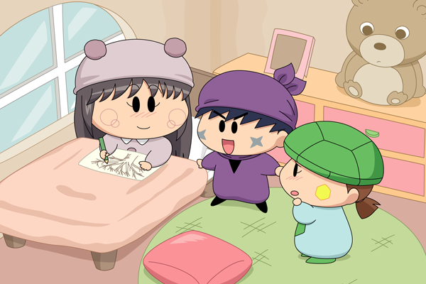

そこは日の光が差し込む、暖かな部屋でした。
ミオリはベッドに座り、窓から見える梅の木をスケッチしていました。
サスケ「ミオリさん・・・？」
ミオリ「驚かせちゃった？
私は生まれつき体が弱くて、お外で遊ぶことができないの」
カメリ「ミオリさん～、かわいそう・・・」
ミオリ「ずっとだからもう慣れちゃったけど」
ミオリのスケッチがサスケの目にとまりました。
スケッチには立派な梅の木が描かれているけど、花の咲いていない梅はちょっぴり寂しくも見えました。
サスケ「わぁミオリさん、絵がとっても上手だぜ！」
カメリ「本物そっくり～」
ミオリ「えへへ、ありがとう♪
でもね、私はまだ梅の花を見たことがなくて、
いつも枝だけの絵しか描くことができないの」
それからサスケたちは間違った汽車に乗ってしまったことを話しました。
帰りの切符が無いことを話すと、ミオリはミルモの里行きの切符を持っているので、二人分の２枚の切符を分けてもらいました。
長らく間をあけてしまってすみません。約１年ぶりに連載を再開しました。もともと大したストーリーはありませんでしたが、この後もまったり展開が続くかもしれません。。連載はペースアップいたしますよ！
しかし１年も経つと塗り方などいろいろ変わりますね。実は２０１３年元旦にこれまでの塗り方からよりアニメ絵になるように切り替え、使う色も再度見直していたりします。オリフェのミオリも登場からわずか２回目で髪型を少し見直していたり…。連載前にちゃんと設定は作っておくべきですね。
今回は女の子らしい部屋を描くのに苦戦しました。女の子の部屋ってこんな感じ？（ツッコミ歓迎） ちなみにクマのぬいぐるみは、９４話「超危うし！ミモモショップ」にも登場していたアレです。
(2013/8/2)